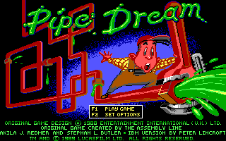
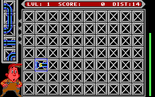

名稱：水管狂想曲 (Pipe Dream／Pipe Mania，英文版)
簡介：Assembly Line 1988年出品的益智遊戲，原名為「Pipe Mania」，1989年由Lucasfilm
移植至DOS，並更名為「Pipe Dream」銷售。台灣由智冠代理進口 [待補]。


備註：本版為1989/10/30版
保護：顏色圖案密碼，破解碼：
PIPE.EXE
EA 75 03 E9 06 (1989/9/25版)
-- 90 90 -- --
或
FA 02 74 06 B8 01 (1989/10/30版)
-- -- EB -- -- --